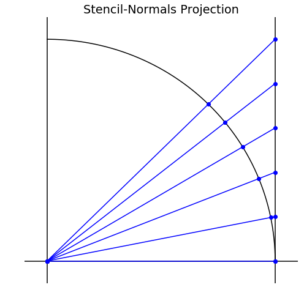

Varun and Grady discussed and explained the Tangent Plane method for solving PDEs on Surfaces.
- Sage's Tasks
- Code
- Research
- Writing
- Misc
- Tangent Plane Method
- Symmetric OGR
- Meeting Followup
- References
Sage's Tasks
Code
- Account for the hessian to fix the code for the RBF Symmetric OGr method.
- Implement time-stepping.
- Test RBF OGr interpolation.
- Compare speed of Numpy, MATLAB, and C++.
- Test surface diffusion methods on a torus.
Code the Tangent Plane Method.
Research
- Research the Skeel Condition Number[1].
- Research sphereical harmonics.
- Research the Eigen and Armadillo libraries for C++.
- Research and use BLAS libraries.
Research the moment conditions on PHS interpolation. (read Grady's Memo 5)Read Grady's Memo 6 on the Tangent Plane Method.
Writing
- Write Radial Basis Function Article
- Write the theorem for exactness.
- Write RBF-FD article.
- Write RBF-FD Projection Method article.
- Write RBF-OGr article.
Write Numpy Efficiency article.(matrx of vectors)- Add local approximation to RBF Interpolation article.
- Improve Wikipedia article on RBFs.
Misc
- Select PhD programs.
- Get access to a server.
Tangent Plane Method
Grady is reviewing a paper in which approximations to the function weights for numerically approximating the Laplacian are being obtained by projecting neighboring points onto the tangent plane and calculating the weights that approximate the 2D Laplacian in the tangent plane.
An efficient method for performing this computation at the point $\vec{x}$ is to form the rotation matrix $R_{\vec{x}} = [\vec{t}_1 \vec{t}_2 \vec{n}]$ which rotates all vectors to the $z$-axis while preserving their length. Then the matrix $$ E = \begin{bmatrix}1&0&0\\0&1&0\\0&0&0\end{bmatrix} $$ when used as a weighting will ignore the $z$-component of the rotated vector, effectivly projecting it onto the tangent plane before calculating the distance. Thus for any vector $\vec{x}_i$, the weighted distance is given by \begin{align*} d(\vec{x}, \vec{x}_i) &= \big[ ER_{\vec{x}}(\vec{x} - \vec{x}_i) \big]^T \big[ ER_{\vec{x}}(\vec{x} - \vec{x}_i) \big] \\ &= (\vec{x} - \vec{x}_i)^T R_{\vec{x}}^T E^T E R_{\vec{x}} (\vec{x} - \vec{x}_i) \\ &= (\vec{x} - \vec{x}_i)^T R_{\vec{x}}^T E R_{\vec{x}} (\vec{x} - \vec{x}_i) \\ &= (\vec{x} - \vec{x}_i)^T W_{\vec{x}} (\vec{x} - \vec{x}_i) \\ \end{align*} where $W_{\vec{x}} = R_{\vec{x}}^T E R_{\vec{x}}$. Using this weighted distance we can compute the stencil weights using RBF-FD applied to the 2D Laplacian.
Symmetric OGR
Grady coded up Symmetric OGR as described and was getting the same results as Sage - correct weights up to a scaling factor. Grady thinks that the issue is that the hessian is not being accounted for. A 2002 paper by Xu and Zhao[2] gives $$ \nabla_\SS^2 f = \nabla^2 f - \frac{\partial^2 f }{\partial \vec{n}^2} - \kappa \frac{\partial f }{\partial \vec{n}} $$ where $\kappa$ is the mean curvature. This shows that we require not only the gradient to be zero but the hessian to be zero as well since $\frac{\partial^2 f }{\partial \vec{n}^2} = \vec{n}^T H(f) \vec{n}$.
Meeting Followup
Tangent Plane Method - Memo 06
Grady's Memo 6 demonstrates that the distance between points projected to the tangent plane using the stencil-center normal projection can be written as a weighted inner product in the ambient space. He conjectures that no such weighted inner product does the same for the stencil-normals projection. I've worked out a counter example that shows that in general one does not exist.
Proof:
Consider points on the unit circle being projected onto the line $x=1$ as seen below.
The projection maps each point via $[\cos \theta, \sin \theta]^T \mapsto [1, \tan \theta]^T$. Suppose there were a weight matrix $W$ such that for any two points $\vec{x}_1, \vec{x}_2$ corresponding to the angles $\theta_1$ and $\theta_2$ we have $$ (\vec{x}_2 - \vec{x}_1)^T W (\vec{x}_2 - \vec{x}_1) = \tan \theta_2 - \tan \theta_1. $$ Denote $$ W = \begin{bmatrix}a & b \\ c & d \end{bmatrix}. $$ Then the left hand side of our equation can be expressed as \begin{align*} (\vec{x}_2 - \vec{x}_1)^T W (\vec{x}_2 - \vec{x}_1) & = \begin{bmatrix}\cos \theta_2 - \cos \theta_1 & \sin \theta_2 - \sin \theta_1 \end{bmatrix} \begin{bmatrix}a & b \\ c & d \end{bmatrix} \begin{bmatrix}\cos \theta_2 - \cos \theta_1 \\ \sin \theta_2 - \sin \theta_1 \end{bmatrix} \\ &= a \big( \cos^{2}{\left (\theta_2 \right )} - 2 \cos{\left (\theta_2 \right )} \cos{\left (\theta_1 \right )} + \cos^{2}{\left (\theta_1 \right )} \big) \\ &\phantom{==}+ b \big( \sin{\left (\theta_2 \right )} \cos{\left (\theta_2 \right )} - \sin{\left (\theta_2 \right )} \cos{\left (\theta_1 \right )} - \sin{\left (\theta_1 \right )} \cos{\left (\theta_2 \right )} + \sin{\left (\theta_1 \right )} \cos{\left (\theta_1 \right )} \big) \\ &\phantom{==} + c \big( \sin{\left (\theta_2 \right )} \cos{\left (\theta_2 \right )} - \sin{\left (\theta_2 \right )} \cos{\left (\theta_1 \right )} - \sin{\left (\theta_1 \right )} \cos{\left (\theta_2 \right )} + \sin{\left (\theta_1 \right )} \cos{\left (\theta_1 \right )} \big) \\ &\phantom{==} + d \big( \sin^{2}{\left (\theta_2 \right )} - 2 \sin{\left (\theta_2 \right )} \sin{\left (\theta_1 \right )} + \sin^{2}{\left (\theta_1 \right )} \big) \\ &= \left[\begin{matrix}\left(\cos{\left (\theta_2 \right )} - \cos{\left (\theta_1 \right )}\right)^{2}\\\left(\sin{\left (\theta_2 \right )} - \sin{\left (\theta_1 \right )}\right) \left(\cos{\left (\theta_2 \right )} - \cos{\left (\theta_1 \right )}\right)\\\left(\sin{\left (\theta_2 \right )} - \sin{\left (\theta_1 \right )}\right)^{2}\end{matrix}\right]^T \begin{bmatrix}a \\ (b+c) \\ d\end{bmatrix} \end{align*} which must be equal to $\tan \theta_2 - \tan \theta_1$ for any pair $\theta_2, \theta_1$. If we fix $\theta_1$ and choose at least 4 more angles for $\theta_2$ we will have a $4 \times 3$ over determined linear system. In order to be consistent the least squares solution to this over determined system must have a residual of exactly 0.
Choosing the angles $\theta_i = \arctan(.2(i-1))$ for $i=1, 2, ..., 6$ (the angles in the diagram above) gives a residual of $0.00183405$ which is not zero. Thus no choice of weight matrix can make the distance between projected points equivalent to the weighted inner product.
$\blacksquare$
References
- Nicholas J. Higham. Accuracy and Stability of Numerical Algorithms. University of Manchester, 2002. URL: https://epubs.siam.org/doi/abs/10.1137/1.9780898718027.fm, arXiv:https://epubs.siam.org/doi/pdf/10.1137/1.9780898718027.fm, doi:10.1137/1.9780898718027.fm.
- Jian-Jun Xu and Hong-Kai Zhao. An eulerian formulation for solving partial differential equations along a moving interface. Journal of Scientific Computing, 19(1):573–594, Dec 2003. URL: https://doi.org/10.1023/A:1025336916176, doi:10.1023/A:1025336916176.